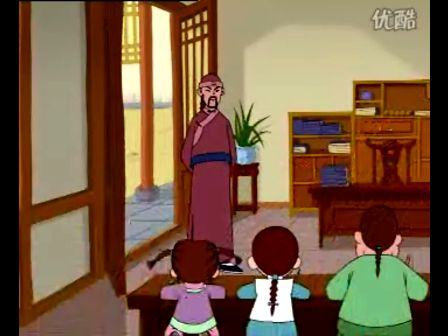

万斯同闭门苦读

清朝初期的著名学者、史学家万斯同参与编撰了我国重要史书《二十四史》。但万斯同小的时候也是一个顽皮的孩子。万斯同由于贪玩，在宾客们面前丢了面子，从而遭到了宾客们的批评。万斯同恼怒之下，掀翻了宾客们的桌子，被父亲关到了书屋里。万斯同从生气、厌恶读书，到闭门思过，并从《茶经》中受到启发，开始用心读书。转眼一年多过去了，万斯同在书屋中读了很多书，父亲原谅了儿子，而万斯同也明白了父亲的良苦用心。万斯同经过长期的勤学苦读，终于成为一位通晓历史遍览群书的著名学者，并参与了《二十四史》之《明史》的编修工作。